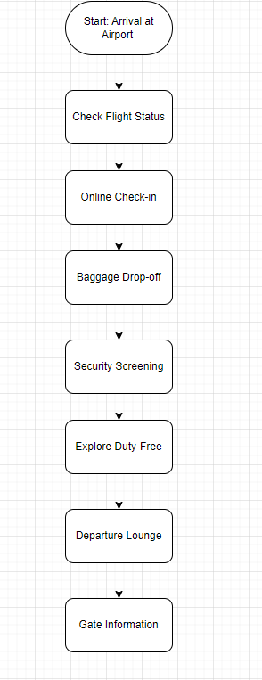

Current and emerging technologies and best practices for IT integration within
an airport. (such as AI,
extended realities, blockchain, drones, 3D printing and others)
1. Artificial Intelligence(AI) and Machine Learning(ML):
- Predictive Analytics: AI algorithms analyze historical data to predict passenger flow,
enabling airports to optimize staffing, security, and resource allocation.
- Chatbots and Virtual Assistants: AI-powered chatbots provide real-time assistance to
passengers, handling inquiries, providing flight information, and even supporting language translation.
- Security Enhancement: Using AI for video analytics to improve security surveillance and
threat detection.
2. Extended Reality (XR) and Virtual Reality (VR):
- Virtual Reality (VR): VR is used for staff training programs, allowing employees to
simulate
emergency scenarios, aircraft maintenance procedures, and customer service interactions. It provides a
virtual
environment that mimics the real world.
- Extended Reality (XR): XR is used for virtual tours, allowing employees to experience the
real world from a virtual perspective. It provides a virtual environment that mimics the real world.
3. Blockchain:
- Blockchain: Blockchain is a decentralized, distributed ledger that records transactions
and
maintains a record of who owns what. It is used for financial transactions, supply chain management, and
more.
- Smart Contracts: Smart contracts are a type of contract that is executed on a blockchain.
They allow for the execution of specific actions or rules, and can be used for various purposes, such as
payments, voting
- DeFi: DeFi is a type of financial technology that uses blockchain technology to create
decentralized financial applications. It allows for the creation of digital assets, such as
cryptocurrencies,
and allows for the creation of decentralized financial applications.
4. Drones:
- Drones: Drones are a type of aircraft that can fly autonomously and perform tasks such as
surveillance, reconnaissance, and mission control. They are used for a variety of purposes, such as
surveillance, reconnaissance, and mission control.
- Autonomous Vehicles: Autonomous vehicles are a type of vehicle that is designed to
operate
autonomously and perform tasks such as surveillance, reconnaissance, and mission control. They are used for
a
variety of purposes, such as surveillance, reconnaissance.
5. 3D Printing:
- Spare Parts Production: 3D printing is used for spare parts production, allowing for the
downtime of the production line. It allows for the creation of customized parts that can be used in various
applications, such as aircraft, vehicles, and equipment.
- Customized Passenger Services: Airports use 3D printing to create customized passenger
services, such as customized aircraft, customized vehicles, and customized equipment. This allows for the
creation of unique and customized passenger services that can be used in various applications, such as
airports, airlines, and hotels.
6. Biometric Technololgy:
- Biometric Authentication: Biometric authentication is a type of authentication that uses
biometrics, such as fingerprints, iris, or facial features, to verify the identity of a user. It is used for
various purposes, such as security, access control, and fraud detection.
- Facial Recognition: Facial recognition is a type of biometric authentication that uses
facial features, such as eyes, nose, and mouth, to verify the identity of a user. It is used for various
purposes, such as security, access control, and fraud detection.
- Fingerprint Recognition: Fingerprint recognition is a type of biometric authentication
that
uses fingerprints, such as thumbprints, to verify the identity of a user. It is used for various purposes,
such as security, access control, and fraud detection.
7. Cybersecurity Best Pratices:
- Encryption: Encryption is a type of security that uses algorithms to encrypt data, making
it unreadable to unauthorized parties. It is used for various purposes, such as protecting data from
unauthorized access, and ensuring data integrity.
- Firewall: A firewall is a type of security that protects a network from unauthorized
access, such as hackers, malware, and other threats. It is used for various purposes, such as protecting
against unauthorized access, and ensuring data integrity.
Environmental factors and options for sustainable travel, budgeting and financial costs of Dammy's Airport
Environmental Factors and
Sustainable Travel:
1. Energy Efficiency:
- Renewable Energy: Power IT infrastructure using renewable energy sources, such as solar
or
wind power, to reduce the carbon footprint.
- Energy Efficiency: Optimize energy consumption by using energy-efficient appliances, such
as LED light bulbs, to reduce energy consumption.
- Solar Panels: Install solar panels on buildings to reduce energy consumption and generate
renewable energy.
2. Waste Redudction:
- Recycling: Recycle materials such as paper, plastic, glass, and metal to reduce waste.
- Composting: Compost organic waste to reduce landfill waste and improve soil health.
- Recycling: Recycle materials such as paper, plastic, glass, and metal to reduce waste.
3. Public Transportation Integration
- Accessible Public Transit: Promote and integrate public transportation options, such as
buses or trains, to and from the airport.
- Public Transportation Efficiency: Optimize public transportation systems to reduce fuel
consumtion and improve transportation efficiency.
- Public Transportation Safety: Implement safety measures such as traffic lights, stop
signs,
and pedestrian crossings to reduce accidents and improve public transportation safety.
Budgeting and Financial Cost:
1. Total Cost of Ownership (TCO) Analysis:
- Comprehensive Cost Analysis: Conduct a TCO analysis to evaluate the overall costs,
including initial investment, maintenance, and operational expenses associated with digitalized airport
infrastructure.
- Budgeting: Develop a budgeting plan to manage the financial costs associated with
diigitalized airport infrastructure.
- Financial Cost Management: Implement a financial cost management system to track and
manage
the financial costs associated with digitalized airport infrastructure.
2. Operational Efficiencies:
- Operational Efficiency: Implement operational efficiencies to improve the overall
performance and efficiency of the airport infrastructure.
- Maintenance and Repair: Implement maintenance and repair processes to ensure the airport
infrastructure remains operational and up-to-date.
Legal and ethical factors that could impact the development of a Smart airport
using AI
Legal Factors:
1. Data Protection and Privacy Laws:
- Compliance with data protection regulations (e.g., GDPR, CCPA) is crucial. Ensure that the collection,
storage, and processing of passenger and employee data adhere to legal requirements. Clearly communicate
privacy policies and obtain consent where necessary.
- Implement data protection measures to protect passenger and employee data from unauthorized access, use,
disclosure, or destruction.
- Ensure that data is encrypted and securely stored to protect against unauthorized access.
2. Security and Aviation Regulations:
- Comply with security and aviation regulations, such as FAA, Aviation Regulations, and other relevant laws
and regulations.
- Implement security measures to protect the airport from unauthorized access, disruption, or damage.
- Ensure that airport security measures are regularly updated and maintained to ensure the safety of
passeger
and employees.
3. Cybersecurity Laws:
- Implement robust cybersecurity measures to protect digital systems from cyber threats. Compliance with
cybersecurity laws and regulations is essential to safeguard sensitive data and ensure the integrity of
airport operations.
Ethical Factors:
1. Transparency and Accountability:
- Ensure that the airport's operations are transparent and accountable. Report any incidents or incidents
that
may have occurred to the appropriate authorities.
- Promote transparency and accountability in the airport's operations by regularly reporting any incidents
or
incidents that may have occurred to the appropriate authorities.
2. Informed Consent:
- Ensure that passenger and employee data is collected and processed in accordance with legal and regulatory
requiremenets. Clearly communicate the purpose and scope of the data collection and processing.
3. Bias and Fairness:
- Ensure that the airport's operations are fair and inclusive. Avoid discrimination or bias in the
collection,
processing, and use of passenger and employee data.
4. Job Displacement and Training:
- Address the ethical implications of potential job displacement due to automation. Implement training and
reskilling programs to prepare the workforce for new roles created by digital technologies.
AI developments including machine learning and deep
learning for Dammy's Airport
1. Security and Surveillance:
- Facial Recognition: AI-driven facial recognition systems are used for identity
verification
during check-in, security screening, and boarding processes, improving security and reducing processing
times.
- GPS Tracking: AI-driven GPS tracking systems are used to monitor passage of passengers
and
employees, providing real-time information on their locations and routes.
2. Baggage Handling and Tracking:
- Predictive Maintenance: AI is used to predict and prevent equipment failures in baggage
handling systems, reducing downtime and improving operational efficiency.
- Smart Baggage Tracking: ML algorithms track and manage baggage movements, minimizing the
risk of lost or mishandled luggage.
3. Customer Service:
- Chatbots: AI-powered chatbots are used for customer support, answering questions, and
providing personalized assistance.
- Virtual Assistants: AI-powered virtual assistants are used for auto-scheduling,
reminders,
and personalized assistance.
- Customer Feedback: AI-powered customer feedback systems are used to collect and analyze
customer feedback
4. Maintenance and Infrastructure:
- Predictive Maintenance for Infrastructure: AI is used to predict and schedule maintenance
tasks for airport infrastructure, such as runways, lights, and terminals.
- Real-time Monitoring: AI-powered monitoring systems are used to monitor airport
operational
parameters, such as temperature, humidity, and aircraft positions.
- Drone Technology: Drones equipped with AI capabilities are employed for infrastructure
inspection, enabling efficient and accurate assessments.
5. Emergency Response:
- Emergency Response Systems: AI-powered emergency response systems are used to respond to
emergencies, including aircraft accidents, fire incidents, and medical emergencies.
- Predictive Incident Response: ML algorithms analyze data to predict potential security
incidents, enabling proactive emergency response measures.
- Natural Language Processing (NLP): NLP is used to process and analyze emergency
communication, helping authorities respond effectively to crisis situations.
How cloud computing be applied in Dammy's Airport
1. Data Storage and Management:
- Data storage and management systems are used to store and manage passenger and employee data, ensuring
secure and reliable data storage.
- Centralized Storage: Cloud platforms enable airports to store and manage vast amounts of
data generated from various sources, including passenger information, flight data, security footage, and
operational records.
- Scalable Storage Solutions:Cloud providers offer scalable storage options, allowing
airports to expand or reduce storage capacity based on demand.
2. Infrastructure as a Service (IaaS):
- Scalable Infrastructure:Cloud IaaS allows airports to scale computing resources (such as
servers and storage) based on demand, optimizing resource utilization and reducing costs.
- Disaster Recovery: Cloud services provide reliable disaster recovery solutions, ensuring
that critical systems can be quickly restored in case of unexpected events.
3. Internet of Things (IoT) Integration:
- IoT Data Processing: Cloud platforms can process and analyze data from IoT devices
deployed
in various airport systems, such as baggage tracking, security sensors, and environmental monitoring.
- IoT-Enabled Applications: Cloud services can provide IoT-enabled applications, enabling
airports to leverage IoT data for real-time insights and automated responses.
4. Digital Passenegrs Services:
- Mobile Apps and Portals:Cloud computing supports the development and hosting of mobile
applications and online portals that provide passengers with real-time information, self-service options,
and
personalized experiences.
- AI-Driven Assistance:Cloud services can provide AI-driven assistance, enabling passengers
to access information and services more efficiently and effectively.
- Personalized Marketing:Cloud-based analytics enable airports to leverage passenger data
for
personalized marketing campaigns, improving customer engagement and satisfaction.
5. Cybersecurity:
- Security Services: Cloud-based security services can provide security solutions,
including
firewalls, intrusion detection systems, and encryption solutions enhancing the overall security posture of
Dammy's Airport IT systems.
- Compliance Management: Cloud-based compliance management systems can monitor and manage
compliance requirements, ensuring that airport operations are compliant with regulatory and industry
standards.
What security risks pose a threat to the development and
maintenance of Dammy's
Airport and what options do we have to mitigate those?
1. Cybersecurity Threats:
- Risk: Cyberattacks targeting Dammy's Airport systems, networks, and data, such as
ransomware, malware, and phishing attacks. These attacks can compromise the security of Dammy's Airport
systems and data, disrupting operations and causing loss of data.
- Mitigation:
- Implement robust cybersecurity measures, including firewalls, intrusion detection systems, and
antivirus
solutions.
- Regularly update and patch software to address vulnerabilities.
- Conduct regular cybersecurity training for Dammy's Airport staff to enhance awareness and prevent
social
engineering attacks.
2. Data Breaches:
- Risk: Unauthorized access to sensitive passenger information, financial data, or
operational details.
- Mitigation:
- Encrypt sensitive data both in transit and at rest.
- Implement strong passwords and multi-factor authentication for all user accounts.
- Monitor and respond to data breaches promptly to prevent unauthorized access and data loss.
3. Physical Security Threats:
- Risk: Unauthorized access to secure areas, tampering with physical infrastructure, or
theft
of equipment.
- Mitigation:
- Deploy surveillance cameras and access control systems.
- Implement biometric access controls for restricted areas.
- Implement physical security measures, such as fencing and security alarms, to prevent unauthorized
access.
4. IoT Security Challenges:
- Risk: Unauthorized access to IoT devices, data, or systems.
- Mitigation:
- Implement secure communication protocols and encryption for IoT devices.
- Implement secure storage solutions and regular update firmware for IoT data.
- Segment IoT networks to isolate potential threats.
5. Lack of End-User Awareness:
- Risk:Employees and passengers falling victim to social engineering or inadvertently
contributing to security breaches.
- Mitigation:
- Implement robust security measures, including access control, authentication, and encryption.
- Conduct regular security audits and penetration testing to identify and address potential
vulnerabilities.
- Provide clear and concise security documentation to employees and passengers.
How can we ensure the smart, digitalized, designed and
modernized Dammy's
Airport is culturally diverse supporting equality and diversity of all passengers including language
barriers?
1. Multilingual AI Chatbots and Virtual Assistants:
- Include AI-driven chatbots and virtual assistant that are able to speak several languages with passengers
- Offer timely help, answer routine questions and give details about airport facilities
2. Language Translation Apps:
- Create an airport app that is designed for the user and has language translation capabilities built in.
- Enable passengers to be notified of important announcements, direction and information in a preferred
language.
3. Augmented Reality (AR) for Navigation:
- Use technological functions of AR to help technology around the airport.
- AR will help passengers navigate their way to the gates, services and amenities they require while
delivering relevant information in various languages if necessary.
4. Smart Signage with Dynamic Translation:
- Install smart digital signage that translates information dynamically, depending on the composition of
passengers.
- Sensors can be used to determine the language preferences of passengers in proximity and display info
depending on that.
5. Mobile Check-in and Biometric Authentication::
- Provide mobile check-ins that are available in multiple languages.
- To ensure inclusive and secure boarding, include biometric authentication for fluidity in the process
6. Virtual Reality (VR) Cultural Experiences:
- Design VR travel scenarios that provide passengers with the opportunities of virtually discovering and
becoming aware of different cultures.
- Provide virtual reality material in waiting rooms to augment the cultural awareness and enjoyment of
passengers.
Principles of UI design and how the use of extended
realities might enhance this in Dammy's Airport
1. Wayfinding with AR:
- Through the use of AR overlays on smartphones or AR glasses, provide real-time wayfinding information as
such inside an airport.
- AR is a way of directing passengers to their gates, facilities and services with the help of visual
indicators that are superimposed on actual surroundings.
2. Virtual Assistance with VR:
- Informational and support services could be made more engaging and effective with help of VR.
- Introduce VR interfaces for virtual assistance where users can interact with AI-based avatars or computers
generated staff members.
3. Digital Shopping and Retail Experiences:
- Use AR to provide virtual try-on sessions in retail stores.
- Provide virtual shopping experiences in airport stores and restaurants.
4. VR Relaxation Spaces:
- Develop VR relaxation rooms where the passengers can enjoy some peace away from all that is happening at
the airport.
- Calming VR environments help achieve a positive atmosphere in an airport setting.
5. Virtual Queues and Check-ins:
- Use VR applications to provide information about virtual queues and check-ins that are not present
physically.
- VR can be used by passengers to check in, access boarding passes and so on.
Risk assessment including technical and nontechnical threats (consider a risk
matrix to support this) in Dammy's Airport
Technical Threats
1. Cybersecurity Attacks: Cybersecurity attacks pose a significant
threat to airport systems, with the potential for unauthorized access, data breaches, and disruption. Given
the high likelihood and impact of such attacks, effective mitigation strategies are crucial. Regular security
audits, implementation of robust firewalls and encryption, and thorough employee cybersecurity training are
all essential strategies to combat this risk. It is imperative for airports to prioritize and maintain a
strong defense against cybersecurity threats to safeguard their operations and protect sensitive data.
2. System Failures: Potential for System Failures: Possible
Concern: Potential malfunctions or breakdowns in essential systems (such as baggage handling or security
screening). Chances: Not negligible Consequences: Significant Prevention Strategies: Utilizing backup systems,
conducting routine upkeep, and implementing automated surveillance.
3. Data Privacy Breaches: Data privacy breaches can be a major
concern for any organization, as they can lead to the unauthorized access or leakage of sensitive passenger
information. This can be particularly worrisome given the moderate likelihood of such breaches occurring and
the potential high impact they can have. To mitigate this risk, it is important for organizations to take
strict measures such as implementing robust data encryption methods, ensuring compliance with data protection
regulations, and conducting regular privacy assessments. By doing so, organizations can better protect their
passengers' information and maintain their trust.
4. IoT Vulnerabilities: Airport operations face the potential
threat of IoT vulnerabilities, which can be exploited if proper precautions are not taken. While the
likelihood and impact are considered moderate, it is crucial for the industry to be proactive in protecting
against potential attacks. Regular security updates, network segmentation, and adherence to best practices for
IoT security are key measures in mitigating these risks and ensuring the safety and security of airport
operations
Non-Technical Threats
1. Natural Disasters:: Natural disasters, such as earthquakes,
floods, and other catastrophic events, pose a significant risk of disruption. Although the likelihood of such
events occurring is relatively low, their impact can be extremely high. In order to mitigate the effects of
these disasters, it is important to have well-developed emergency response plans, resilient infrastructure,
and effective disaster recovery protocols in place.
2. Pysical Security Threats: The safety and security of airport
facilities can be compromised by potential threats, such as unauthorized access, theft, or damage. These risks
are deemed moderate in likelihood but pose a high impact. To mitigate these dangers, measures such as advanced
surveillance systems, strict access controls, and the presence of experienced physical security personnel are
implemented. By implementing these precautions, the airport aims to ensure the safety and protection of its
premises and passengers.
3. Human Factor Risks: The potential for human error and malicious
activity within an airport poses a significant threat to overall security. This particular risk is moderate in
likelihood but has the potential for high impact if left unchecked. To mitigate this risk, proper training and
strict background checks should be implemented for all airport employees. Additionally, access controls should
be closely monitored and enforced to prevent unauthorized individuals from gaining access to sensitive areas.
By taking these precautions, the airport can better safeguard against potential insider threats and maintain a
safer environment for all.
RISK MATRIX
Testing types and methodologies that may support the
devlopment of all systems with justification In Dammy's Airport
1. Security Testing: Protection of sensitive data, prevention of
unauthorized access, and compliance with security standards all rely on the crucial practice of security
testing. With the ever-growing risk of cyberattacks, this type of testing serves as a vital measure in
identifying any vulnerabilities or weaknesses within airport systems.
2. Functional Testing: Strengthening Airport Functions: Functional
testing plays a crucial role in ensuring the smooth functioning of an airport's systems. It carefully
evaluates each function, from self-check-in kiosks to baggage handling systems and security screenings, to
ensure they meet the necessary requirements for a streamlined airport experience.
3. Stress Testing: Stress testing takes load testing to the next
level as it pushes systems beyond their usual operational capacity. This rigorous testing approach is crucial
in identifying potential points of failure, bottlenecks, or weaknesses under intense circumstances. By
ensuring the airport's systems can withstand unexpected surges in demand, stress testing guarantees resilience
and enhances overall performance.
4. Automation Testing: As the smart airport ecosystem continues to
expand, automation testing proves to be an invaluable tool for speeding up the testing process. With its
ability to handle repetitive and laborious tasks, automation significantly increases efficiency and enables
quicker release cycles while maintaining high standards of quality.
5. Data Integrity Testing: Validating the integrity of data is
crucial for proper decision-making and smooth functioning of the airport's systems. By ensuring the accuracy
and reliability of stored and processed data, this type of testing helps prevent operational errors that could
potentially hinder airport operations. Thus, data integrity testing is a vital aspect of maintaining effective
and error-free systems.
2.3 Flow Chart


Explanation
Start: Arrival at Airport: The passenger begins the journey at the airport.
Check Flight Status: Confirm the status of the flight using airport displays or mobile apps.
Online Check-in: Complete check-in online to save time.
Baggage Drop-off: Drop off checked luggage at the designated counter.
Security Screening: Pass through security checks for compliance.
Explore Duty-Free: Optionally explore duty-free shops before entering the departure lounge.
Departure Lounge: Wait in a comfortable area with amenities.
Gate Information: Check displays for the boarding gate information.
Boarding Process: Board the plane according to the announced procedure.
In-Flight: Enjoy the flight experience.
Arrival at Destination: Deboard the plane upon arrival.
Baggage Claim/Customs: Collect checked-in baggage and clear customs if needed.
Transportation Options: Choose transportation options for leaving the airport.
End: Exit from Airport: Complete the journey and exit the airport premises.